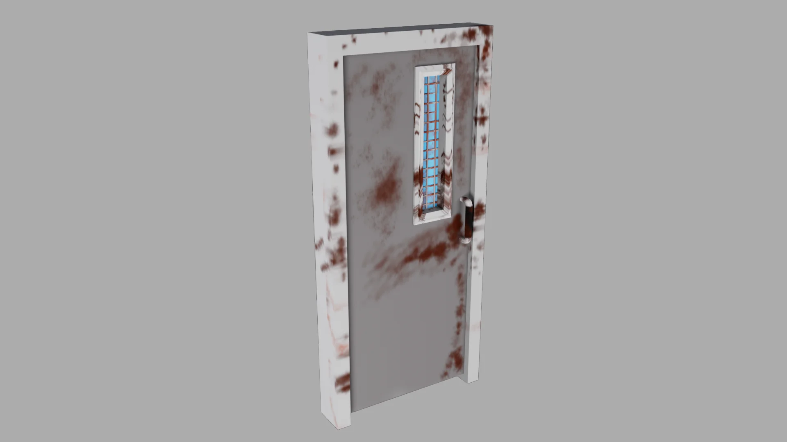
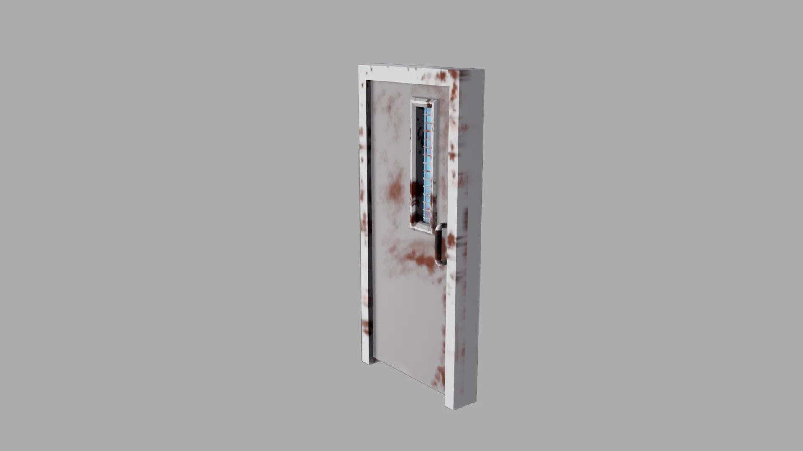
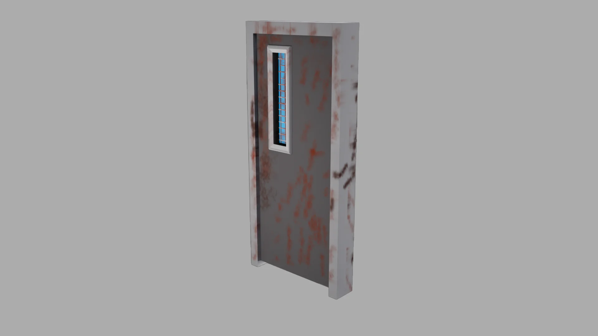
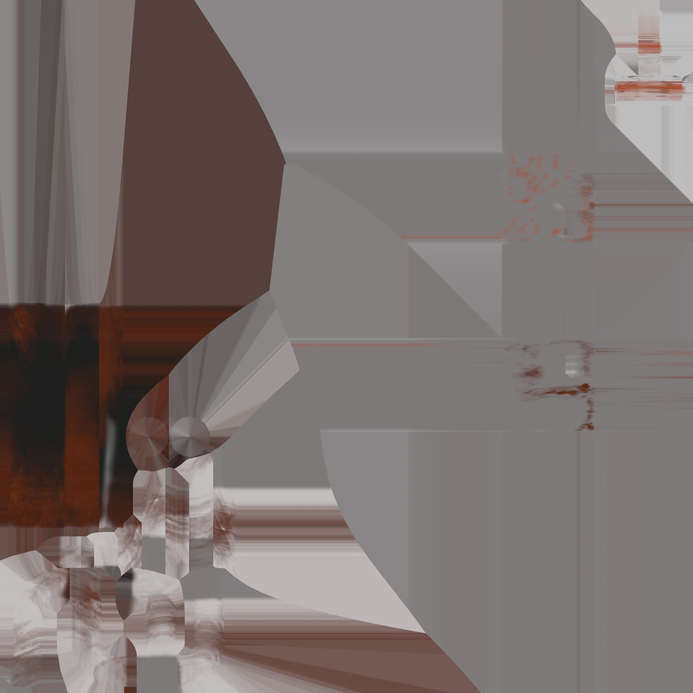
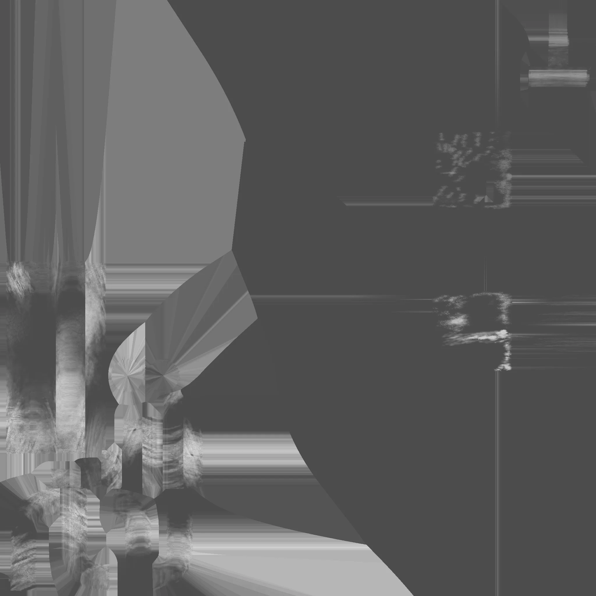
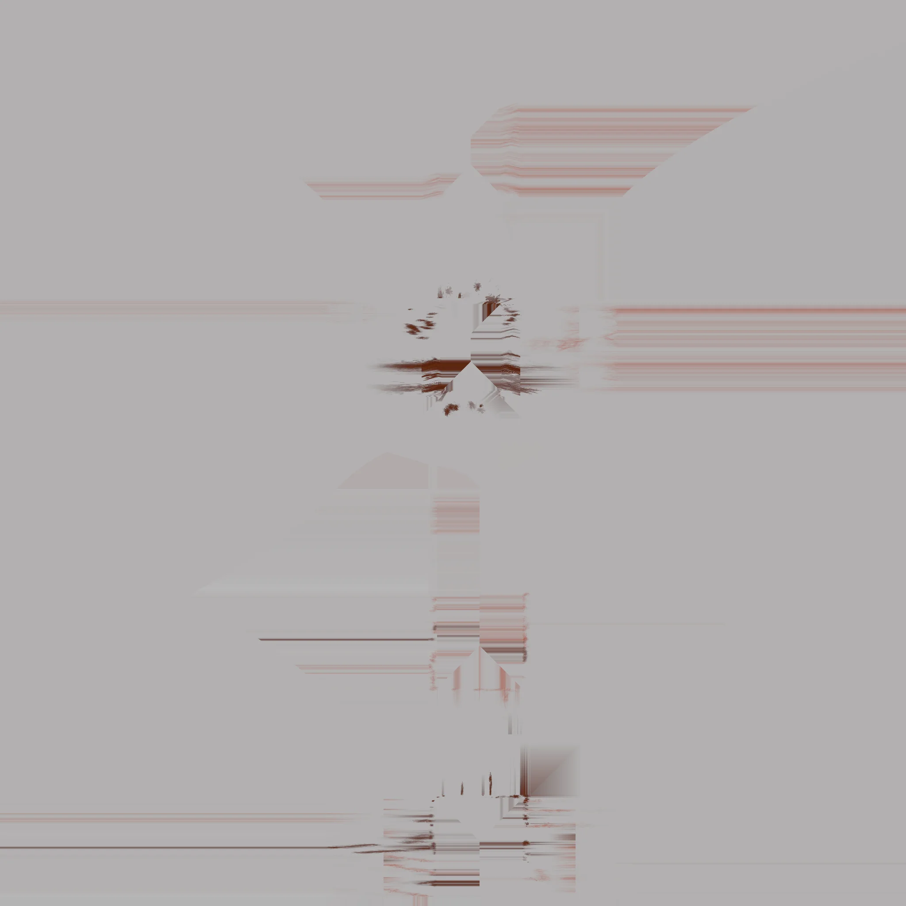
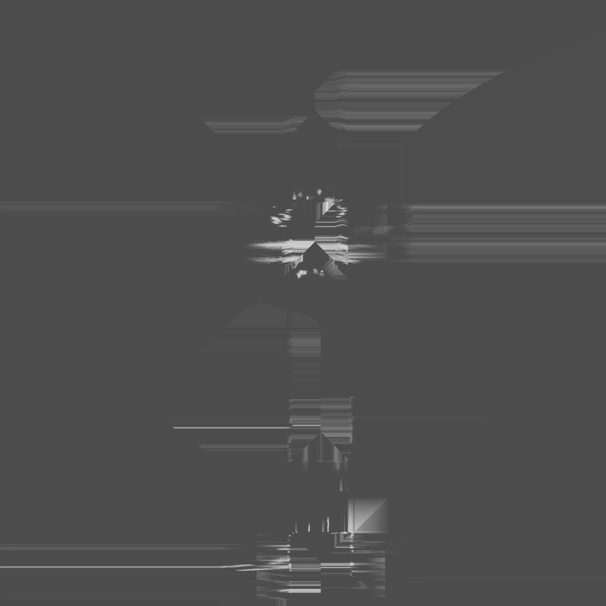
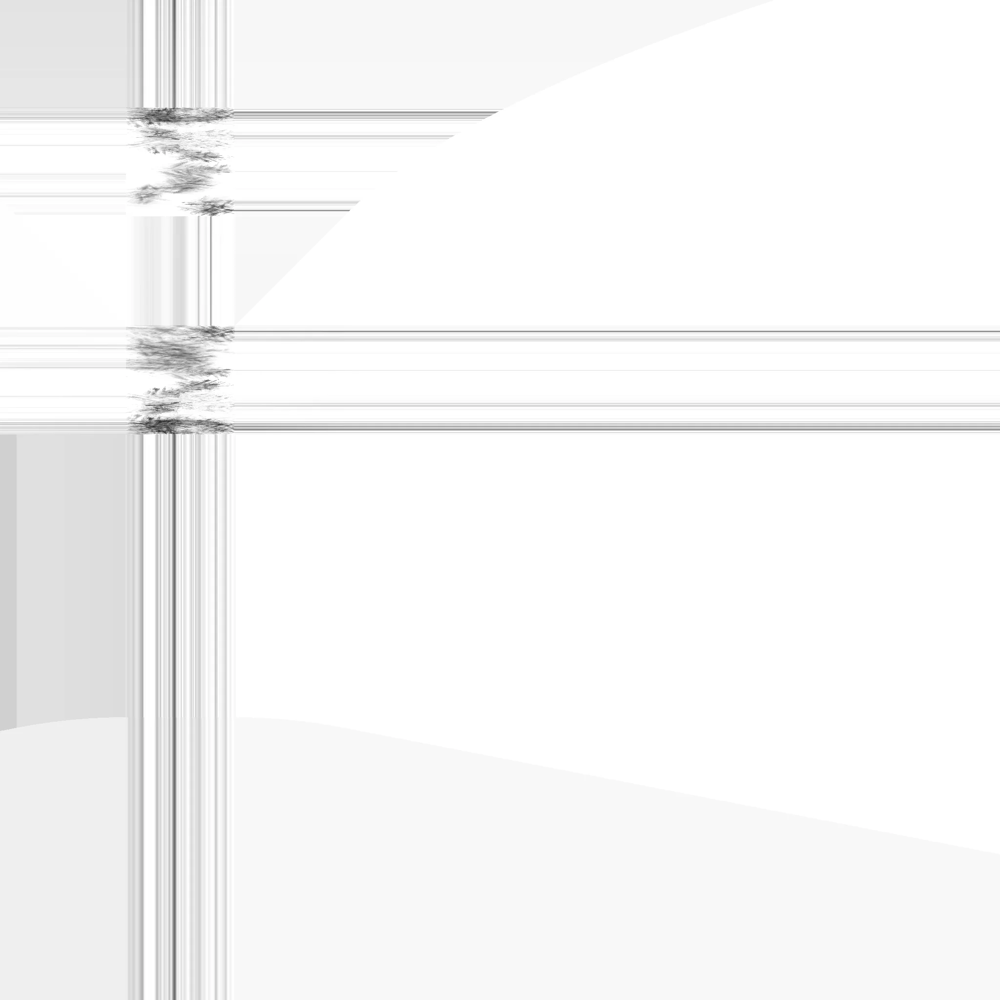
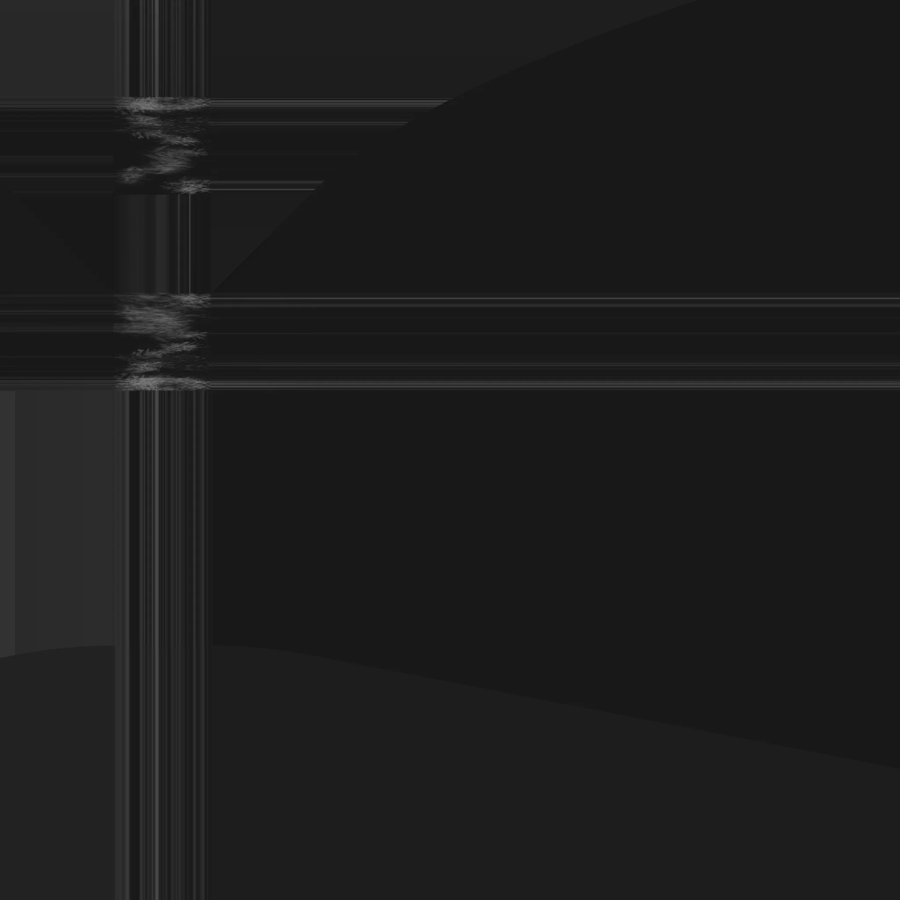

Project type:
Hard Surface Sculpting project in Maya.
Project description:
For this project I modeled a door in Maya and texture painted the rusty texture in Substance Painter.
------------------
The main objective is to practice texture painting. The second objective is to use this rusty door model for horror project I am working on.
Date:
April 14 - May 4, 2025
Role:
3D Modeler and Texture Painter.
Project highlight:
Renders from different angles:



Door Texture:



Metal Doorframe Texture:



Door Window Glass Texture:


Reference:

Reflection:
This project helps me practice texture painting in Substance Painter and also get me thinking about where I should paint the rusts to make them look natural while also convey the weathering on the door.